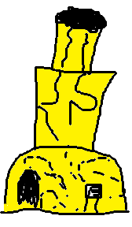
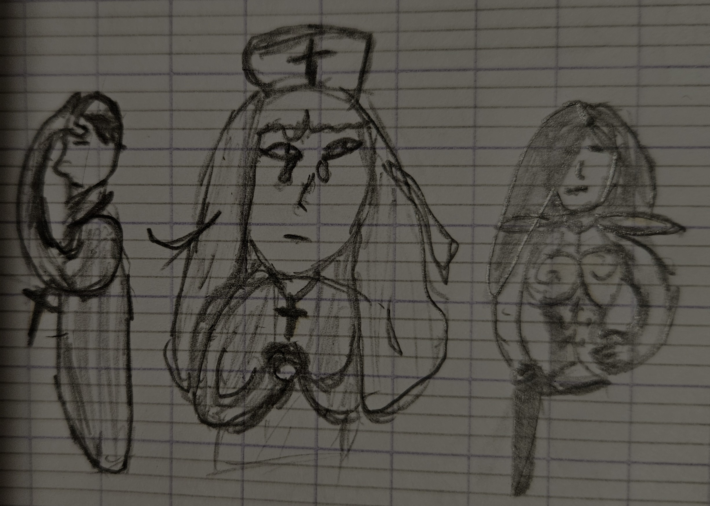
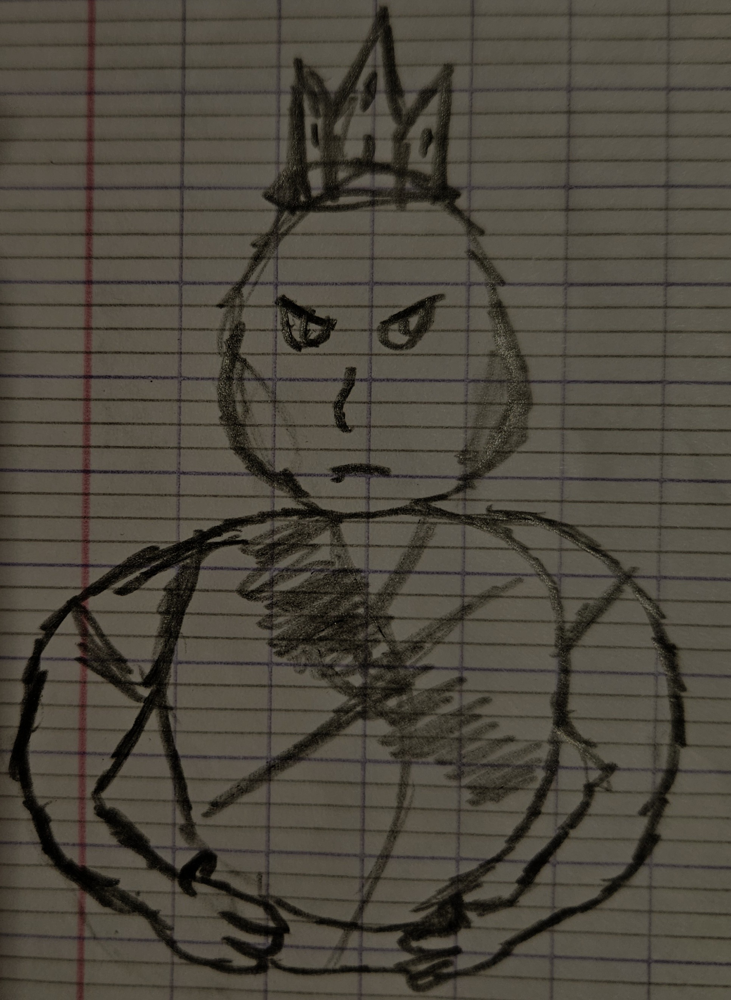
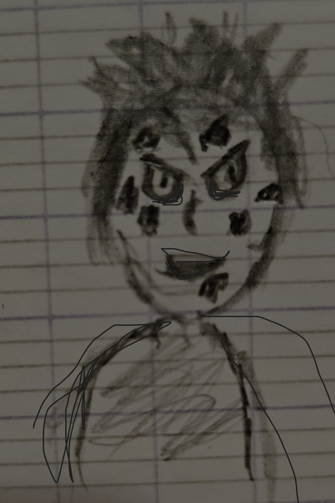
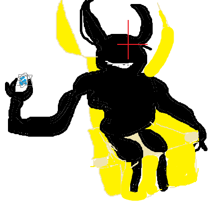

Vous vous montrez debitatif car ce sont des démons mais vous vous reprenez et continuez à avancer et protéger vos compagnons.
Vous voyez que les démons avec les armes ont du mal à repousser les anges et beaucoup ont perdu la vie.
Le prêtre leur fait un signe de les accompagner.
Face à cette crise les démons ne vous attaquent même pas.
Vous continuez à courir vers le château.
Vous n'avez plus besoin d'intervenir, les démons le font et n'hésitent pas à se faire sacrifier pour protéger votre groupe.
Vous arrivez au pied du château, le roi des démons vous voit directement et se prépare à vous attaquer mais le prêtre lui fait un signe et vous laisse passer.
Vous entrez tous au château, à l'intérieur vous ne pourrez pas vous faire attaquer par les hauteurs.
Vous voyez le prêtre discuter avec le roi, Silvie protège la porte et Emilie apporte son aide aux blessés.
Vous décidez d'aller voir le roi des démons.
Le roi vous dévisage mais continue sa conversation avec le prêtre.
Vous écoutez leur discussion.
"Mon roi, nous devons utiliser notre objet sacré"
"C'est hors de question! nous n'avons qu'une seule utilisation et c'est un objet donné par les dieux"
"Mon roi comprenez-moi, les anges dehors sont immortels, c'est le bon moment pour l'utiliser, c'est le seul moyen"
"Mmmmh! nous ne sommes pas sûrs que ça marche et en plus nous devons donner un sacrifice"
"Mon roi, Je suis prête donc je me sacrifierai pour le bien de tous mes enfants"
"C'est hors de question!!!"
Vous écoutez cette conversation et prenez votre décision.
Vous le crier haut et fort au roi des démons.
"Je me propose pour ce sacrifice!!!! de toute façon vous voulez ma mort alors qu'elle serve à quelque chose!"
le roi vous regarde et s'apprête à refuser mais le prêtre lui coupe la parole.
"Non! ton don nous sera encore utile, si nous échouons tu pourras remonter le temps pour trouver une meilleure solution"
Vous êtes déterminé et vous lui faites comprendre en le regardant droit dans les yeux.
Le roi hésite et change d'avis.
"Très bien, si le fumier se sacrifie alors j'accepte. L'objet se trouve au fond du couloir, je l'ai préparé car je savais qu'on n'aurait pas le choix."
Vous foncez avec le prêtre vers le lieu indiqué. Vous vous retournez et vous voyez Silvie et le roi protéger la porte avec bravoure.
Vous entrez dans le couloir et vous voyez l'objet immense.

Elle est recouverte d'or et ressemble à un mortier.
Le prêtre prend les commandes et commence à l'activer.
Il ouvre la porte et vous dit.
"Assieds-toi ici, l'objet va prendre ton énergie et grâce à elle un sort se lancera. Selon la quantité de ton énergie les dieux peuvent soit nous sauver soit nous laisser à notre merci, donc si ça marche pas je me sacrifierai aussi"
Vous voyez le regard du prêtre, il vous met un immense espoir en vous.
vous ne pouvez pas le décevoir. Vous vous asseyez, le prêtre ferme la porte.
Il fait tout noir mais vous entendez que la machine se met en marche.
Vous vous souvenez de tout votre parcours, tout votre courage, le sourir d'Emilie qui vous réchauffe le cœur, la confiance que vous n'avez jamais eue par le prêtre et surtout, cette bénédiction que vous croyiez être une malédiction "le retour par la mort", elle vous a été bien utile.
Vous n'êtes pas triste, vous êtes fier de vous, fier de votre sacrifice et vous êtes heureux.
Vous sentez que votre énergie commence à s'extraire.
Vous entendez le déclenchement de la machine et une grande explosion.
Vous entendez pour une voix sourde dans vos oreilles.
"Fumier, ça devait pas se...."
Et elle disparaît complètement.
Puis, plus rien, un silence reigne.
Cette fois, il n'y aura pas de réveil dans votre lit, vous fermez les yeux.
Quelques instants plus tard.
Vous entendez un bruit de porte.
Vous ouvrez petit à petit vos yeux et vous voyez Silvie, Emilie et le prêtre.

Emilie a les larmes à l'œil, le prêtre se tient la tête et Silvie se montre impatiente en bougeant son fourreau.
Vous brisez le silence.
"Je suis vivant?"
Emilie vous saute dans les bras.
Le prêtre se montre soulagé et Silvie a un petit sourire au coin.
Vous êtes dans l'incompréhension totale.
Vous regardez le prêtre pour espérer une réponse.
"Me regardez pas comme ça nous n'avons aucune idée de ce qui s'est passé. Mais j'ai une bonne nouvelle vu que tu es vivant. Les anges ont disparu et tout est revenu à la normale."
Vous êtes heureux de cette nouvelle mais vous ne comprenez pas comment vous êtes toujours en vie.
Soudain, vous entendez des bruits de pas et vous voyez un visage que vous n'avez jamais vu.

Le prêtre s'adresse au roi.
"Mon roi, notre héros est toujours vivant."
Vous êtes subjugé le roi que vous avez vu ressemble plus à un démon qu'à un homme.
Le roi vous regarde et vous dit.
"Petit, tu n'es pas au courant de rien?"
vous le regardez dans l'incompréhension.
Il vous tend un miroir, que vous récupérez et pour la première fois vous voyez votre reflet.

Vous êtes comme dans les images du livre du prêtre.
Vous regardez le roi qui continue à te parler.
"Je présume que tu n'es pas au courant de rien. Mmmh, pour faire simple, tu es le fils d'un homme lézard et l'un de ses anges"
Vous rétorquez.
"Attendez quoi?"
"C'est l'une des raisons, pour que nous t'ayons laissé vivre. D'après cet ange tu nous sera utile mais à ce moment nous avions découvert la prophétie de notre dieu qui dit que tu ramèneras l'apocalypse".
Vous restez bouche bée.
"Donc nous avions laissé en vie mais isolés et détestés en attendant que nous aurions une réponse plus précise. Ce qui explique pourquoi tout le monde te juge, ne t'approche pas et fait peur aux enfants."
Le prêtre rajoute.
"Et un jour nous avons eu le même rêve que toi, sauf que nous on aurait lancé cette apocalypse par ta faute donc nous avons pris nos mesures, dis-moi est-ce que tu sens qu'il te manque quelque chose?"
Vous répondez.
"Non, je ne sens rien de différent mais la grande différence c'est avant de rentrer dans l'objet je voyais le roi comme un démon et ses habits aussi. Vous aviez des cornes et la peau noire"
Vous voyez que tout le monde rentre en réflexion.
Puis le roi rit un bon coup.
"HAHA, peut-être que notre dieu t'a sauvé après ton action héroïque"
Vous voyez que tout le monde part vers l'avant et vous décidez de les suivre.
Soudain vous entendez une voix d'homme vous susurrer à l'oreille.
"Mon enfant, je t'ai libéré de ta malédiction des anges en échange de ta faculté à remonter le temps après la mort, seul cet échange a suffi à me mettre en action mais garde ça pour toi"
Vous ne comprenez pas tout mais vous savez que tout ça est fini et en plus vous n'avez plus cette bénédiction qui peut vous faire souffrir.
Vous commencez une nouvelle vie, heureux et accepté par tout le monde.
Enfin, pour le moment.
(dans un endroit inconnu)

"HAHAHA, j'ai dû sauver des ploucs mais j'ai gagné une jolie habilité"